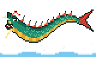

Drachenkarpfen!
Eine alte Sage erzählt: Ein Karpfen, der den Wasserfall am Drachentor hinaufspringt, wird zum Drachen. Dieser hier hat es geschafft – und ist seitdem schlecht gelaunt. Im Spiel beißt er erst, wenn du 25 Karpador gefangen hast.
